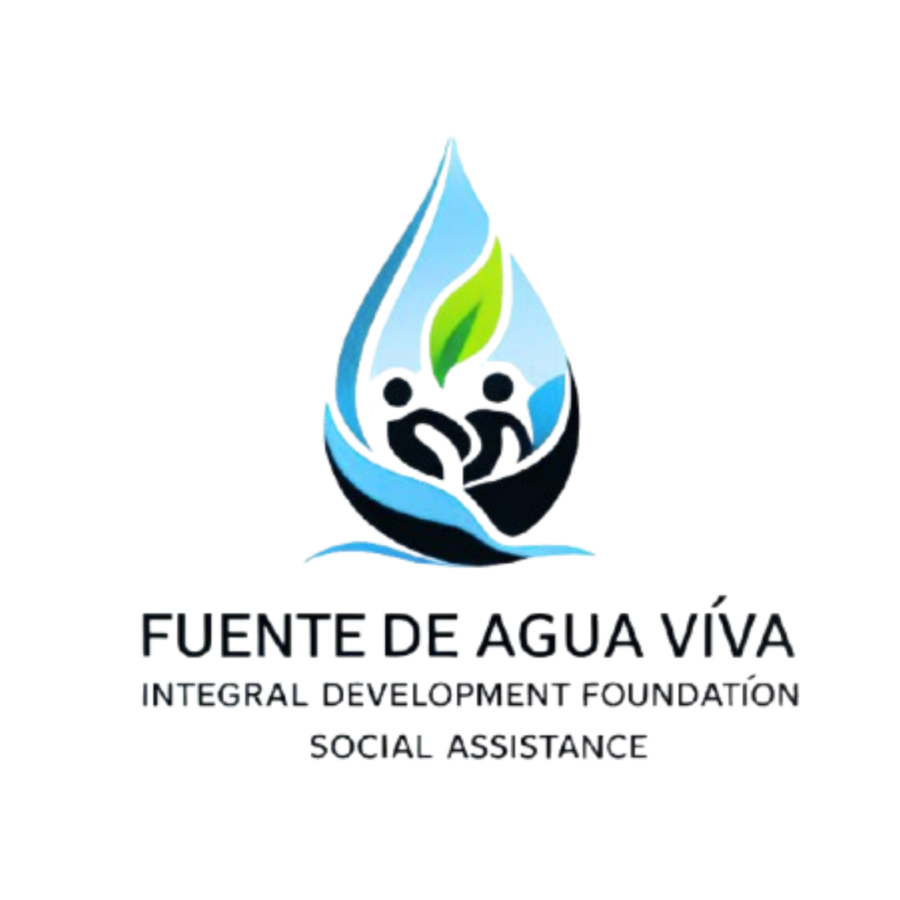
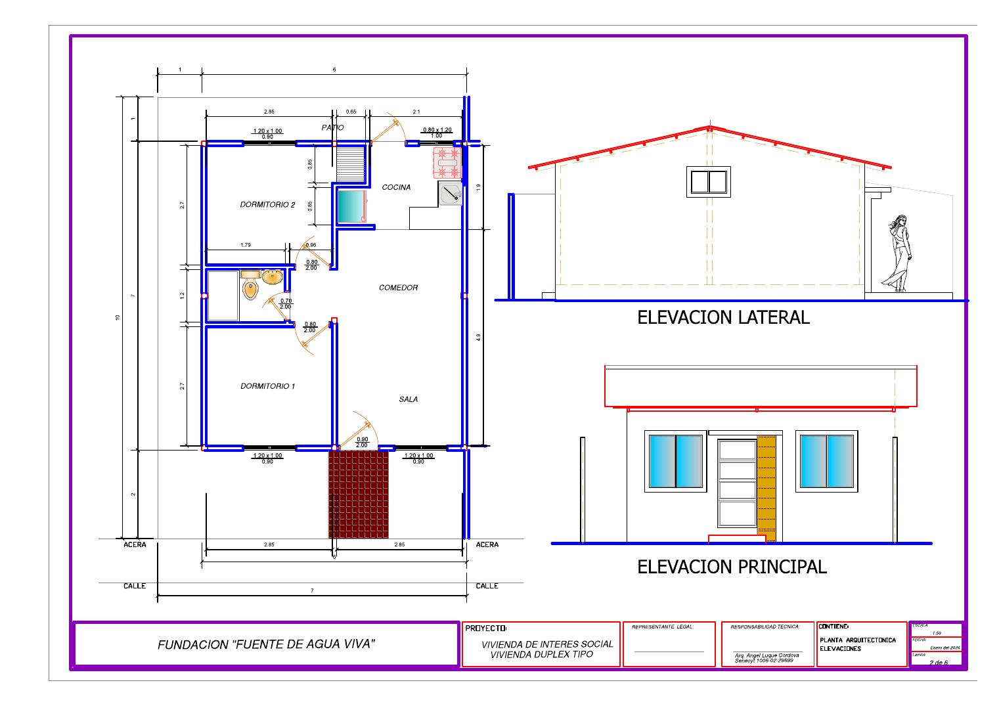

01
Pozos profundos y tanques elevados
Evaluación de necesidades, estudios técnicos, perforación, bombeo y almacenamiento para acercar agua segura a comunidades que hoy enfrentan limitaciones de acceso.
AGUA · INFRAESTRUCTURA · SEGURIDAD
Impulsamos soluciones integrales para comunidades en situación de vulnerabilidad en Ecuador: acceso a agua potable, vivienda digna y fortalecimiento de capacidades para que cada proyecto pueda sostenerse en el tiempo.

El acceso al agua es un punto de partida para mejorar salud, bienestar, seguridad y oportunidades de desarrollo.
Fuente de Agua Viva orienta su trabajo a población y comunidades en situación de vulnerabilidad, combinando infraestructura social con participación comunitaria.
Nuestra prioridad es convertir necesidades concretas en proyectos técnicamente planificados, socialmente útiles y sostenibles. El enfoque une dos ejes centrales: agua potable y vivienda digna, complementados con formación, alianzas y acompañamiento.
La infraestructura es esencial, pero la sostenibilidad depende también de organización, mantenimiento y apropiación comunitaria.
Evaluación de necesidades, estudios técnicos, perforación, bombeo y almacenamiento para acercar agua segura a comunidades que hoy enfrentan limitaciones de acceso.
Propuestas de vivienda de interés social pensadas para mejorar seguridad, habitabilidad y resiliencia de familias en situación de vulnerabilidad.
Formación para fortalecer la operación, administración y mantenimiento de los sistemas, con participación de comités y liderazgos locales.
Articulación con gobiernos locales, empresas, donantes y profesionales para combinar recursos, conocimiento técnico y participación comunitaria.
El proceso se adapta a cada territorio, a la disponibilidad de la fuente, a los permisos aplicables y a las condiciones sociales de la comunidad.
Identificamos necesidad, población, ubicación, acceso actual al agua y nivel de vulnerabilidad.
Se plantean evaluaciones hidrogeológicas y geofísicas cuando corresponda para reducir incertidumbre técnica.
Se define la solución, presupuesto y ruta regulatoria según las exigencias aplicables en Ecuador.
Perforación, instalación del sistema de bombeo, almacenamiento y obras complementarias.
La comunidad recibe orientación para administración, operación y mantenimiento del sistema.
Se promueve mantenimiento preventivo, documentación y coordinación con actores locales.
Una propuesta humanitaria integral para intervenir comunidades priorizadas con vivienda digna, pozos profundos, tanques elevados y capacitación comunitaria.
Ámbito propuesto: comunidades priorizadas de la provincia de Los Ríos.

Material técnico incluido en la documentación del proyecto. Se presenta como referencia de diseño y no como evidencia de una obra ya ejecutada.
Publicamos la información institucional esencial y diferenciamos con claridad entre proyectos ejecutados, proyectos en formulación y metas futuras.
La Fundación cuenta con documentación institucional como RUC y estatutos. Para procesos de debida diligencia, convenios o alianzas, puede solicitarse la documentación pertinente al equipo institucional.
Solicitar documentación →En esta web las cifras del proyecto de Los Ríos aparecen como propuestas. Los resultados de proyectos ejecutados deben incorporarse únicamente cuando exista evidencia verificable de obra, ubicación, fecha y beneficiarios.
Este criterio evita presentar estimaciones como impacto alcanzado y fortalece la confianza de donantes y aliados.
Elige un monto de donación mediante los enlaces institucionales de PayPhone o realiza una transferencia a la cuenta de la Fundación.
Los botones abren PayPhone en una nueva pestaña. Verifica siempre que el monto y el destinatario sean correctos antes de confirmar.
No. La solicitud es un primer paso. La viabilidad depende de priorización social, estudios del sitio, condiciones técnicas, permisos, disponibilidad de recursos y alianzas.
Puedes usar los enlaces institucionales de PayPhone incluidos en esta página o realizar una transferencia a la cuenta corriente empresarial de Banco Pichincha indicada en la sección de donaciones.
Sí. La Fundación contempla alianzas con gobiernos locales, empresas, donantes y profesionales técnicos. Escríbenos indicando el tipo de aporte, servicio o colaboración que puedes ofrecer.
La web muestra el RUC y datos básicos. Para convenios, cooperación o debida diligencia, solicita la documentación institucional pertinente por correo electrónico.
Contacta a Fundación Fuente de Agua Viva para solicitar información, presentar una necesidad comunitaria, proponer una alianza o conocer formas de colaborar.